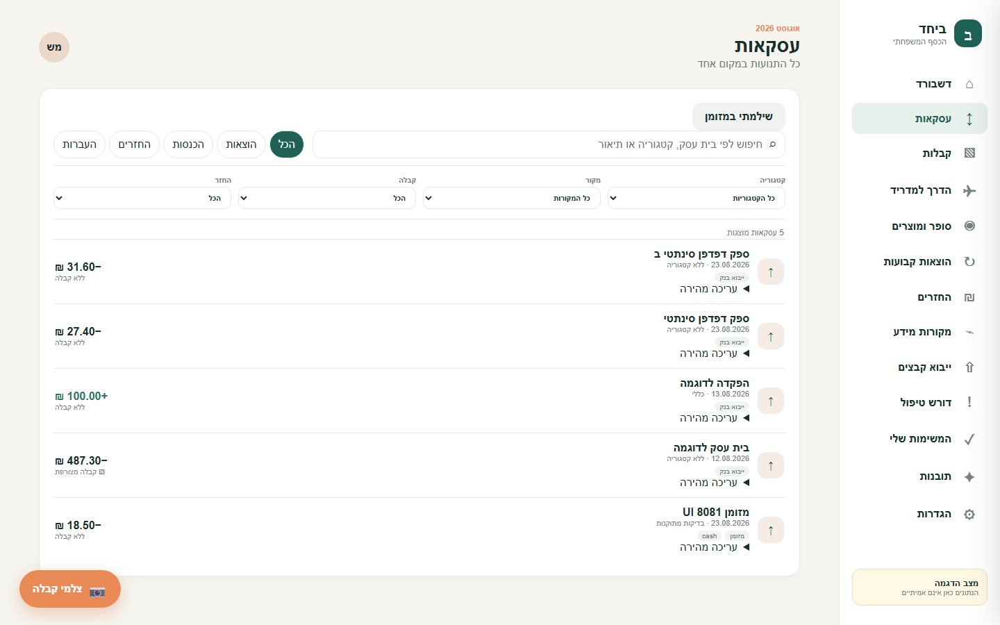

I wanted to know
where our money
was going.
01 / collecting
So I started
collecting things.
Receipts.Emails.SMS.Screenshots.Payment apps.
Receiptstory placeholder
Emailstory placeholder
SMSstory placeholder

Payment appstory placeholder
The problem wasn't finding the information.
It was me.
02 / the human part
The system had to work
even when I…
- forgot to upload the receipt
- couldn't remember what the payment was for
- didn't feel like categorizing anything
- ignored it for three days
- started somewhere else instead
- told myself I'd do it later
Milestone 1